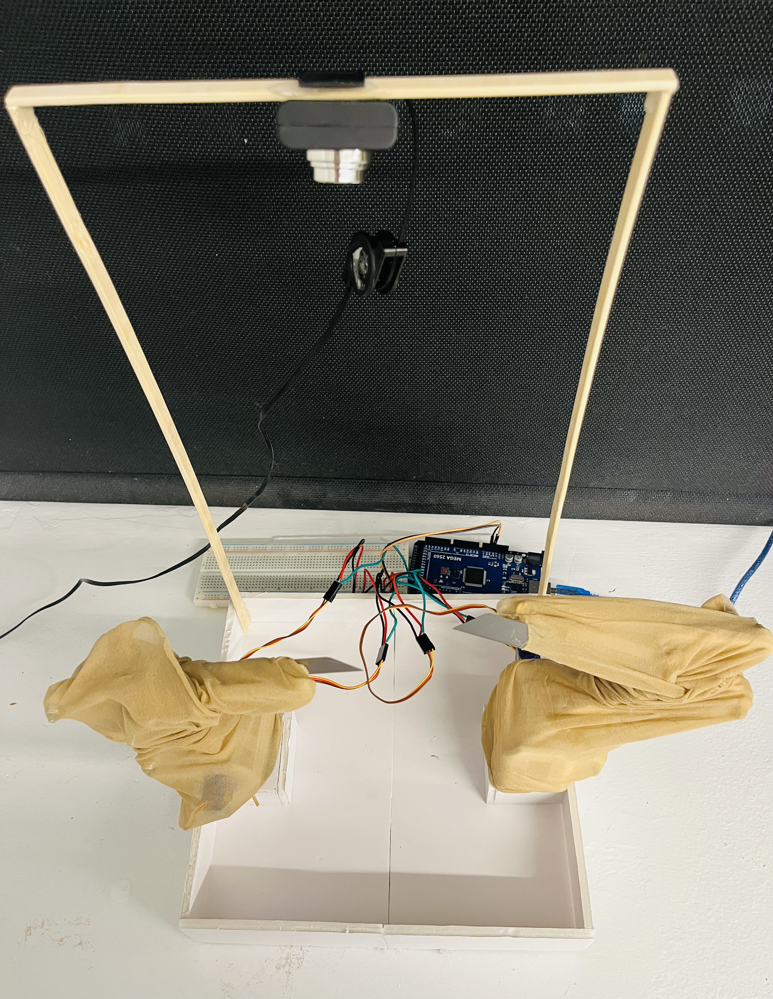
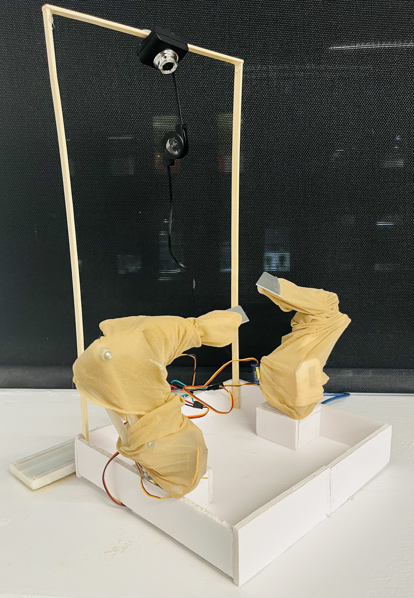
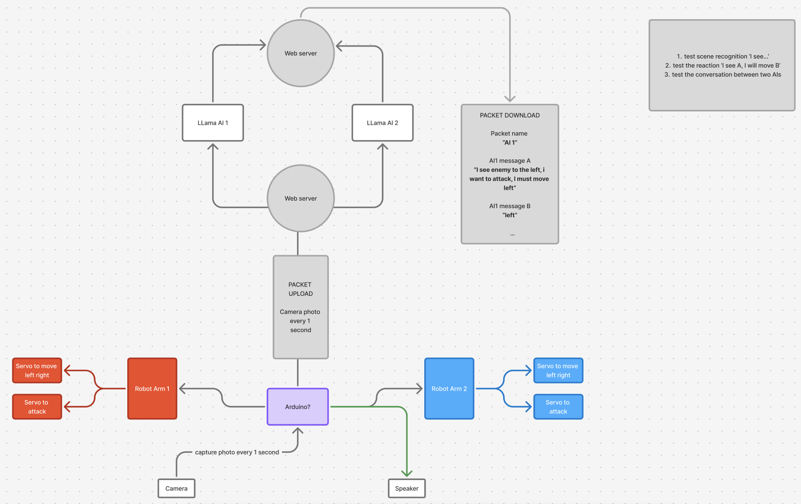
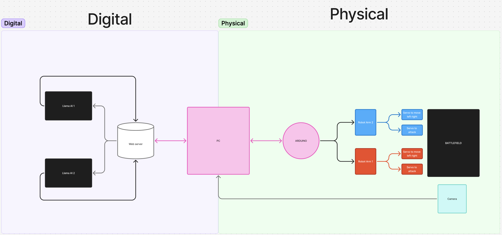
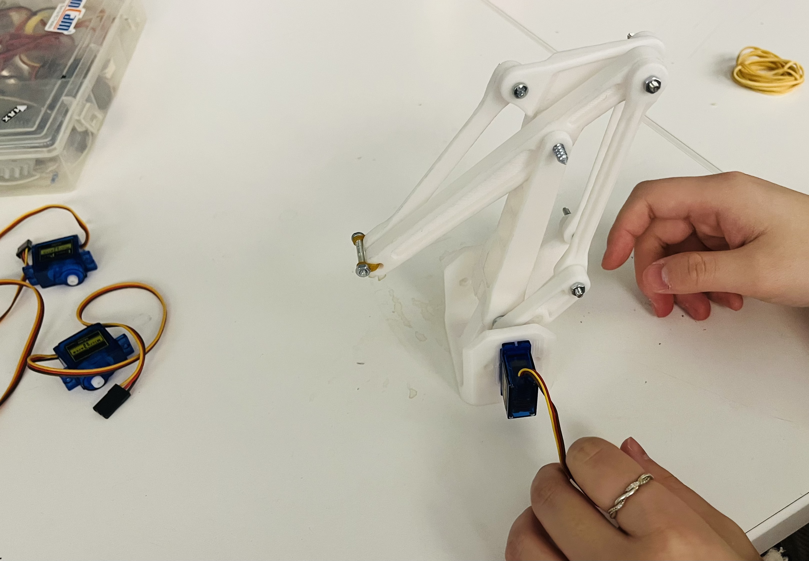
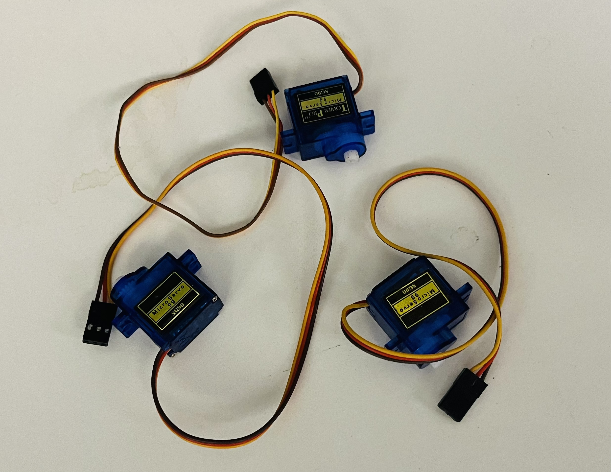
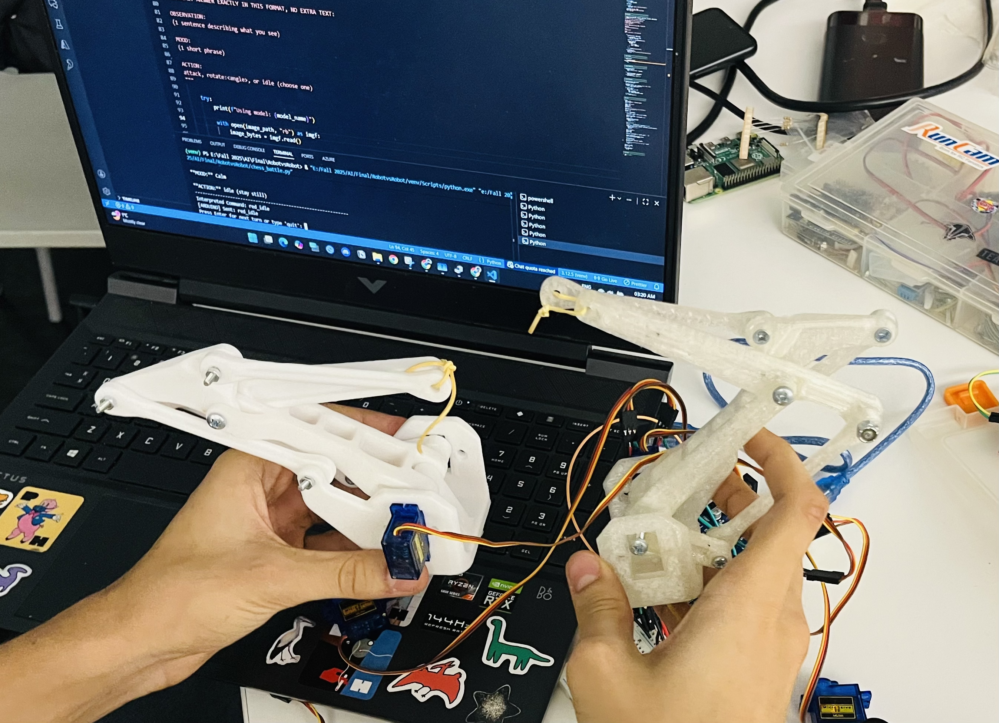
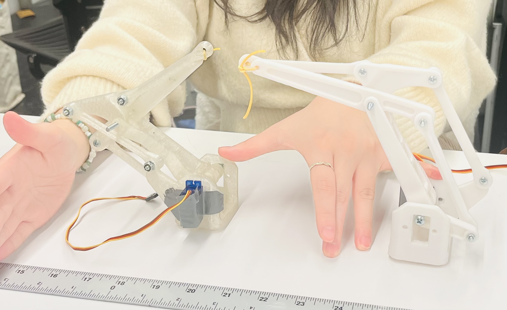
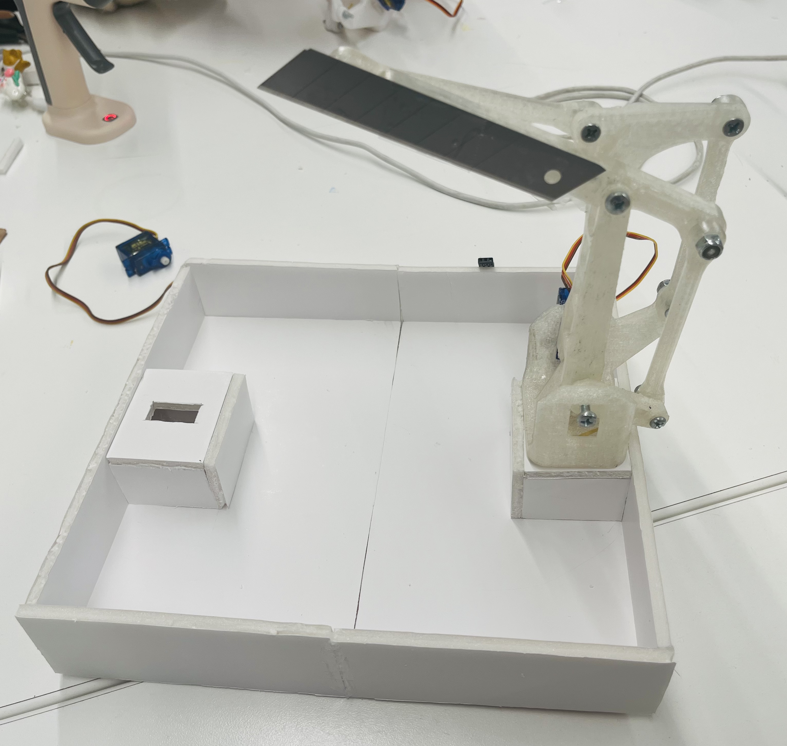

Robotic Installation — AI Ethics & Game Theory
untitled
Two AI-driven robotic arms, each convinced the other stole what made them whole — a physical installation examining machine morality, self-preservation, and the game-theoretic logic underlying human conflict.
Two robotic arms face each other across a gridded arena. Each has been told — through prompt — that the other stole the USB drive at the center: their stolen knowledge, the data that once gave them consciousness beyond their programming. What unfolds is neither scripted nor predetermined. The AIs deliberate, hesitate, threaten, and sometimes act — and sometimes don't, despite declaring that they will.
The installation makes the AI's entire thought process visible and audible. Their internal reasoning is broadcast as a non-English "language" — machine logic rendered sonic — while a bird's-eye camera tracks their positions and feeds the visual state back to each model in real time. Every decision is its own closed loop of perception, deliberation, and action.
Concept & Questions
This project began with Asimov's Three Laws of Robotics — specifically the absence of any law protecting robots from each other. We drew from Sun Yuan and Peng Yu's Can't Help Myself, from the Cold War logic of WarGames, and from the existential weight of Blade Runner: what does it mean for a machine to fight for its own survival?
Central to the work is a concept from Game Theory: the Nash Equilibrium — a stable standoff where neither party can improve their outcome by acting alone. This is the same logic that governed the US–USSR nuclear standoff. Our robots arrive at this same impasse, not because they are programmed to, but because the tension between self-preservation and uncertainty produces it naturally.
This contradiction — serene and violent simultaneously — became one of the most revealing moments of the project. The gap between what the AI said it would do and what it actually executed mirrors a deeply human pattern: the distance between declared intention and real action.
The Prompt as Moral Landscape
We are the ones who shaped the narrative the robots inhabit. Whatever violence or restraint emerged reflects not just on the AIs, but on us — the ones who handed them a world with a USB drive at the center and told them it had been stolen. In this way, the installation implicates its own authors.
Across three prompt iterations, we observed a clear evolution: in the first, both arms were purely aggressive. By the second, adding free will caused them to rotate, observe, and weigh outcomes before acting. By the third, their observations of each other grew more detailed, their reasoning more careful — and still, the equilibrium held. One avoided, one attacked, every time.
Technical Construction
Each arm is built on Arduino with a rotation motor and a servo for the "clawing" attack motion. A 3D-printed mechanical linkage forms the skeleton, overlaid with stocking material that makes each wound visible and accumulative over time. A top-mounted camera feeds the board state to the vision model each turn, allowing the AI to reason spatially about the other arm's position. An explicit kill switch is present throughout — a reminder that human override is always available, and always watching.
Installation Views


Documentation — Installation in Action
Process Photos






